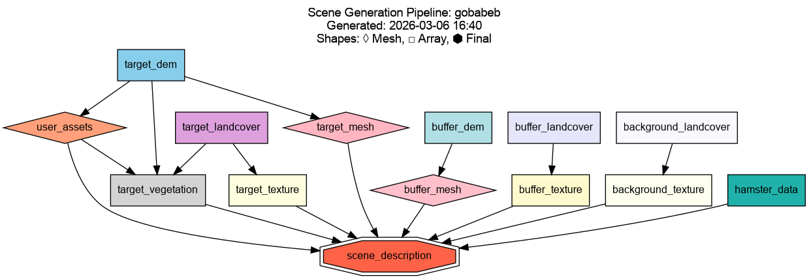
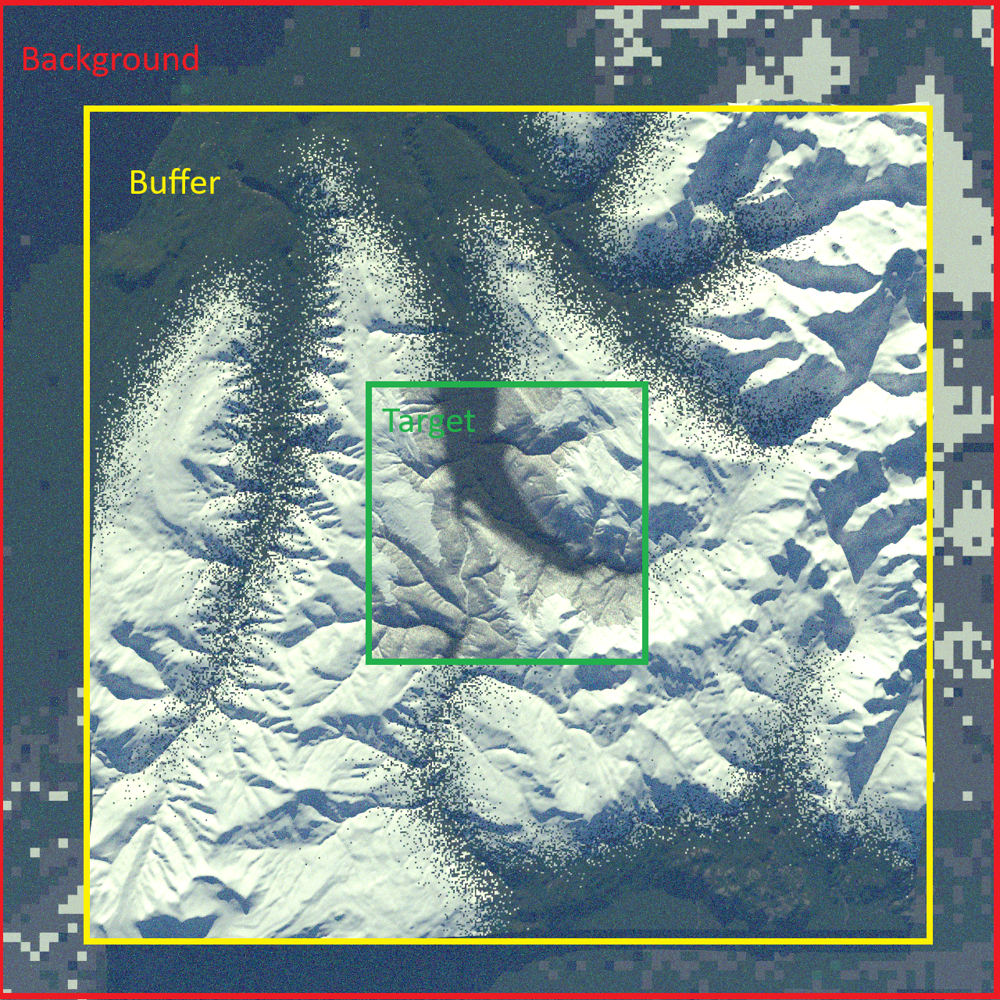

Concepts
This page explains the key ideas behind scene generation in S2GOS: how scenes are spatially organised, how the generation pipeline works, and how atmosphere is configured.
Generation Pipeline
Scene generation follows a DAG (directed acyclic graph) pipeline with automatic dependency resolution. Resources are executed in the correct order automatically — you only need to provide a SceneGenConfig and call run().
The broad stages are:
- Data extraction — Clips source data (DEM, landcover) to the target and optionally buffer/background extents.
- Mesh generation — Converts elevation data into 3D triangle meshes (PLY format), one per zone. The target mesh can be locally refined with an adaptive quadtree grid so that features such as ways sit on well-resolved, flattened terrain.
- Texture generation — Maps landcover classes to material definitions, producing selection textures for each mesh.
- Scene description output — Assembles all resources into a
SceneDescriptionYAML that ties meshes, textures, materials, and atmosphere together for use by the simulator.
Additional optional resources — buildings, ways, spectral material matching, vegetation placement, user assets, HAMSTER albedo data, and XML scene imports — are included in the DAG when enabled and run at the appropriate point in the dependency graph.
Note
The pipeline is under active development. The set of available resources and their configuration options continues to grow.
The pipeline caches completed resources to disk. On subsequent runs, any resource whose configuration is unchanged and whose output files are still present is skipped automatically. Pass use_cache=False to run() to force a full rebuild.
Internally the code follows a two-layer split. Resources (resources/) are the thin DAG nodes: each reads its configuration, calls into the processor layer, persists artifacts, and records them on the shared context. Processors (processors/) are the pure algorithms and format (de)serialization behind those nodes — fetching and parsing ways, painting textures, matching spectra — free of pipeline state so they can be tested and reused in isolation. The Processors API reference documents the public functions.
The figure below shows a typical pipeline DAG for a scene with some optional resources enabled:

Scene Zones
A generated scene is composed of up to three concentric zones, each at a different spatial resolution. Only the target zone is required; the buffer and background zones are optional and extend the scene to reduce edge effects.

Target
The target zone is the core area of interest (AOI). It is generated at the highest resolution using full DEM elevation data and landcover-derived material textures and potentially 3D object such as vegetation. All measurements of interest fall within this zone.
The target is defined by a centre coordinate and an AOI size in kilometres (SceneLocation).
Buffer
The buffer zone (optional) surrounds the target at a coarser resolution. Its purpose is to reduce adjacency and edge-of-scene artifacts.
Configure via BufferConfig:
Background
The background zone (optional) is the outermost ring, extending the scene to the horizon. It uses a flat surface at a fixed elevation — no DEM data is used.
Configure via BackgroundConfig:
Buildings
When BuildingsConfig is
supplied, the pipeline adds 3D buildings to the target zone. Footprints are read
from a directory of quadkey-indexed OpenBuildingMap
GPKG tiles, configured once via generator.files.building_tiles (see
Buildings configuration); the tiles overlapping the AOI
are auto-selected from an index file, then clipped and stitched. Each footprint is extruded to its height (from a parsed building-taxonomy
string, falling back to a configurable default), sampled onto the DEM, and given a
small skirt below its base so it stays anchored on sloped terrain.
Buildings are assigned a material, either a single name or a weighted random draw
from a {name: weight} mapping, and merged into one mesh per material to keep the
scene compact. A configurable fraction can receive pitched (hip) roofs generated
from the footprint's straight skeleton; the rest stay flat-topped.
See Buildings configuration for usage.
Ways
When WaysConfig is supplied,
way (road and railway) geometry is rasterised into the target texture (and preview). Way centrelines
come either from OpenStreetMap via the
Overpass API (source="overpass") or from a local JSON
file (source="file"). Each way's width and surface material are resolved from
OpenStreetMap tags where present, falling back to a built-in per-road-type (or
per-railway-type) table and configurable defaults. Any published output must attribute
© OpenStreetMap contributors.
Because a flat way painted over bumpy terrain looks wrong, enabling ways also drives the adaptive terrain mesh: the terrain under and beside each way is refined and flattened perpendicular to the centreline.
See Ways configuration for usage.
Adaptive terrain mesh
By default the target mesh is a regular grid at the DEM resolution. With
MeshRefinementConfig
the mesh is instead built from an adaptive quadtree: cells are subdivided
(up to max_depth, each level doubling resolution) under feature polygons such as
ways and a surrounding transition buffer, so features sit on well-resolved
geometry without paying that cost everywhere. Refined feature vertices can be
flattened perpendicular to the feature centreline.
The grid also supports the opposite move, decimation, coarsening the base grid over smooth terrain and only refining back toward DEM resolution where the elevation deviates from a fitted plane by more than a tolerance.
See Adaptive mesh configuration for usage.
Spectral material matching
Landcover classes normally map to a single fixed material each, which makes large
homogeneous classes (bare soil, grassland) look unrealistically uniform. When
SpectralMatchingConfig
is supplied, selected classes are instead diversified into several real
materials that reflect the actual variation on the ground. This follows the broad
approach of deriving scene materials from satellite imagery described by
Sorensen et al. (2025).
For each configured class the pipeline:
- Fetches a cloud-filtered Sentinel-2 L2A composite over the AOI around an
acquisition date, on the requested 10 m bands (default
B02, B03, B04, B08). Sentinel-2 data is read from the Copernicus Data Space Ecosystem. - Clusters the per-pixel reflectance of that class into
clusters_per_classgroups with k-means. - Matches each cluster to the closest diffuse material in a spectral library using the Spectral Angle Mapper (SAM, Kruse et al., 1993), which compares spectral shape independent of brightness.
- Paints the matched materials back into the class's pixels in the selection texture.
An optional SAM-angle threshold acts as a quality gate: clusters with no sufficiently close library match keep their base landcover material rather than being forced onto a poor fit. Reading Sentinel-2 from the Copernicus Data Space requires S3 credentials.
See Spectral material matching configuration for the config, credential flow, and material-library requirements.
Atmosphere
The atmosphere is defined at generation time and stored in the scene description YAML. It controls how the simulator models scattering and absorption during radiative transfer. See the Atmosphere API reference for the full configuration schema and helper functions as well as Eradiate for more information.
Output directory structure
After generation, the output directory looks like:
<output_dir>/<scene_name>/
├── meshes/ # PLY mesh files (target, buffer, background)
├── textures/ # Material texture images
├── data/ # Intermediate data (clipped DEM, landcover)
└── scene.yaml # SceneDescription file for the simulator
References
Methods and data sources used by the generator.
- European Space Agency (2024). Copernicus Global Digital Elevation Model. https://doi.org/10.5069/G9028PQB
- Zanaga, D., Van De Kerchove, R., Daems, D., De Keersmaecker, W., Brockmann, C., Kirches, G., Wevers, J., Cartus, O., Santoro, M., Fritz, S., Lesiv, M., Herold, M., Tsendbazar, N.-E., Xu, P., Ramoino, F., & Arino, O. (2022). ESA WorldCover 10 m 2021 v200 (Version v200) [Data set]. Zenodo. https://doi.org/10.5281/zenodo.7254221
- Oostwegel, L. J. N.; Schorlemmer, D.; Lingner, L.; Evaz Zadeh, T. (2025): OpenBuildingMap. GFZ Data Services. https://doi.org/10.5880/GFZ.LKUT.2025.002
- © OpenStreetMap contributors. Overpass API: https://overpass-api.de/
- Sorensen, S., Treible, W., Wagner, R., Gilliam, A. D., Rovito, T., & Mundy, J. L. (2025). Physics Driven Image Simulation from Commercial Satellite Imagery. arXiv preprint arXiv:2504.15378. https://arxiv.org/abs/2504.15378
- Kruse, F. A., Lefkoff, A. B., Boardman, J. W., Heidebrecht, K. B., Shapiro, A. T., Barloon, P. J., & Goetz, A. F. (1993). The spectral image processing system (SIPS)—interactive visualization and analysis of imaging spectrometer data. Remote sensing of environment, 44(2-3), 145-163. https://doi.org/10.1016/0034-4257(93)90013-N
- Copernicus Data Space Ecosystem — Sentinel-2 L2A. https://dataspace.copernicus.eu/